Week 2 · Wednesday 30 September 2026 · 10:00–13:00
AI for Business and FinTech · European School of Economics, Florence
| 10:00 | last week · your homework |
| 10:20 | the question changes: from “fraud?” to “which word next?” |
| 10:40 | open the box: the architecture of a GPT · tokens · vectors |
| 11:05 | break |
| 11:15 | attention · neurons · the knobs |
| 12:00 | where the 117 billion numbers live — and what they cost |
| 12:15 | how the numbers get their values: three stages of training |
| 12:40 | who owns it · what it cannot do · the release, decoded |
The question: is payment E (large, abroad, same device) fraud? Nobody writes the rule — the machine learns it from eight past payments.
| step | in words | on payment E |
|---|---|---|
| 1 · guess | a neuron weighs each red flag, adds them up, and squashes the total into a probability | 0.5 × large + 1 × abroad − 1 → p(fraud) = 0.62 |
| 2 · how wrong | the loss: one number, small when the right answer got a high probability | it was fraud; 0.62 is not sure enough |
| 3 · blame | each weight gets its share of the mistake; in a bigger network, backpropagation passes the blame back, layer by layer | “large” and “abroad” were on: blamed · “device” was off: not blamed |
| 4 · nudge | new weight = old weight − learning rate × blame | 0.5 → 0.88 · 1 → 1.38 → p = 0.84 |
| repeat | every payment, many rounds | average loss 0.45 → 0.03 |
LAB · session.ipynb § 0
The question you want answered by December — in two minutes, as if to a manager. Then the three pitch sentences: which is impossible, and what did you ask the vendor?
“Each model is a Transformer which leverages mixture-of-experts to reduce the number of active parameters needed to process input. gpt-oss-120b activates 5.1B parameters per token … The models have 117b and 21b total parameters …
We tokenized the data using … o200k_harmony … The models were post-trained … including a supervised fine-tuning stage and a high-compute RL stage. … The weights … are freely available … and come natively quantized in MXFP4. This allows for the gpt-oss-120B model to run within 80GB of memory … Available under the flexible Apache 2.0 license.”
Spec table: context length 128k.
Last week we named every bold word. Today we build the machine they describe — a network from last week, plus one new idea — and each word will find its place in it.
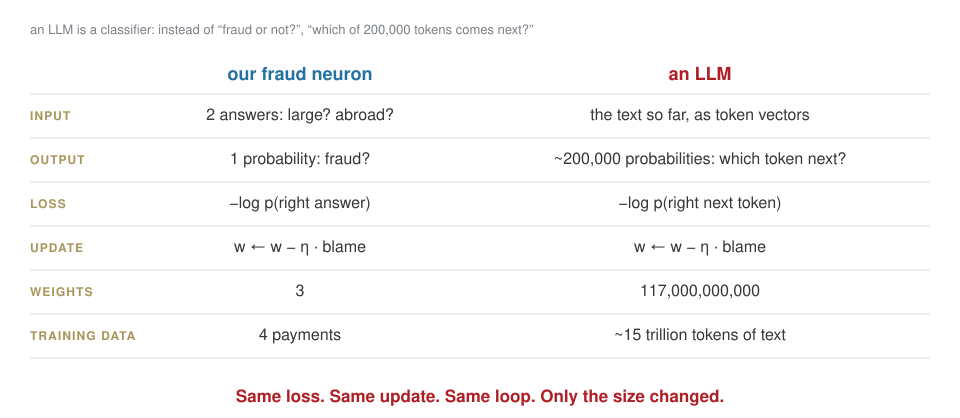
Bet
After “The ECB left rates”, how sure is a real model that the next word is “unchanged”?
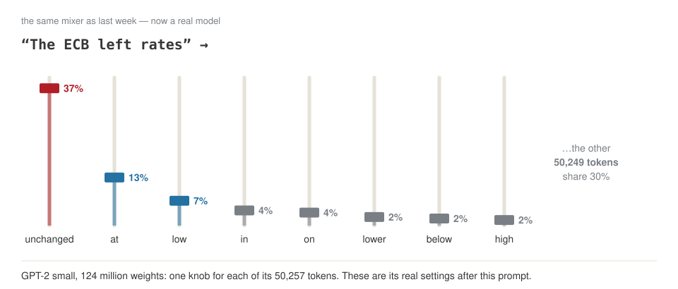
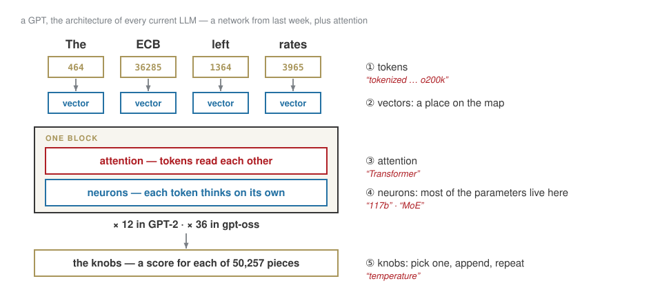
Five boxes. The neurons you know from last week; attention is the one new idea. Each box is a word of the release.
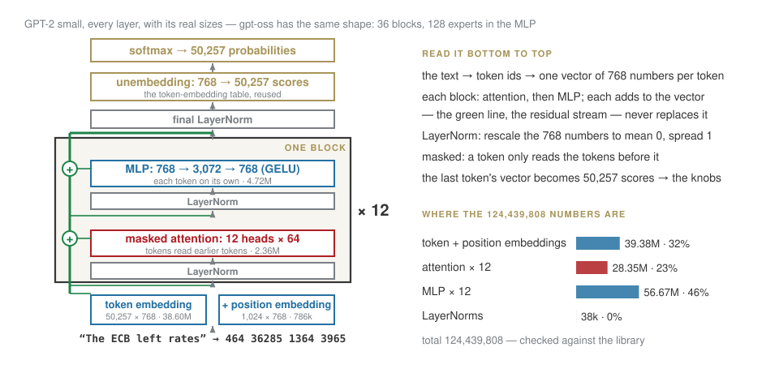
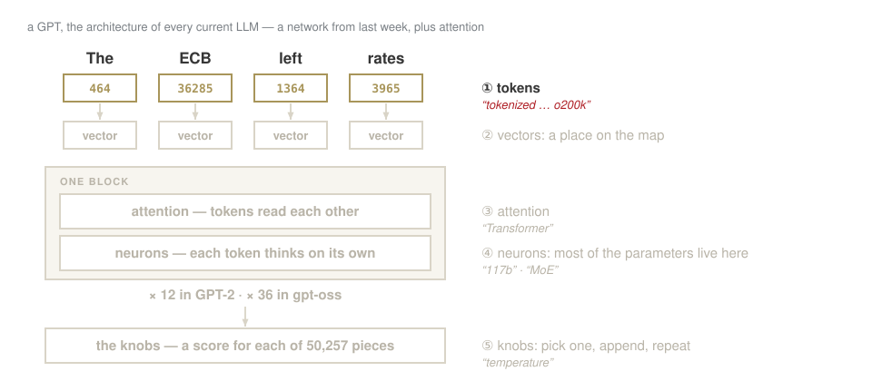
The text is cut into pieces, and each piece becomes a number. The model never sees a word.
Frequent words end up as one piece; rare ones stay in fragments. The text it learned from was mostly English — so Russian is cut finer: the same sentence costs 9 tokens in English, 13 in Russian. You pay per token. Your own texts: session.ipynb § 1.
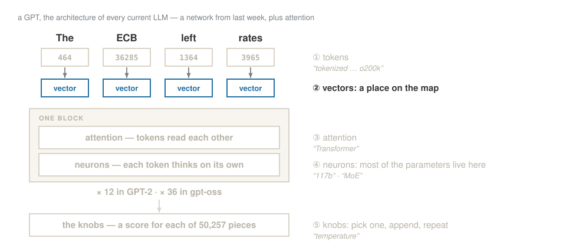
Each token becomes a list of numbers — 768 in GPT-2. Read them as coordinates: a place on a map of meaning.
Words that keep the same company end up close. That list of numbers — its place — is the word’s embedding. Nobody draws the map; the text does.
Each token becomes a list of numbers — 768 in GPT-2 — learned by the same nudge as every other weight.
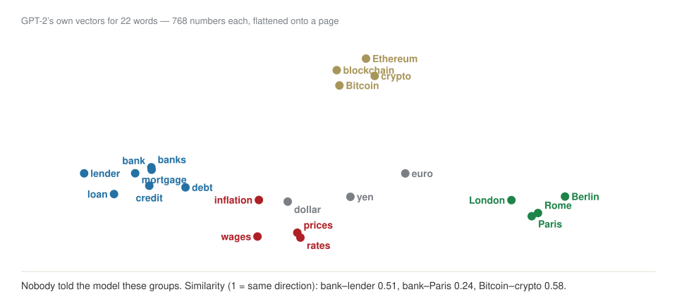
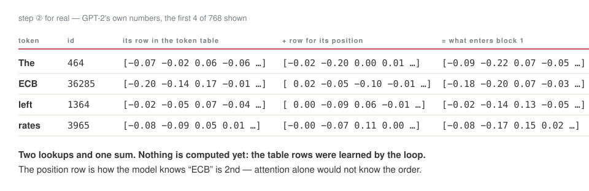
“The bank raised rates.” · “The river flooded the bank.”
On the map, “bank” has one place — in between money and rivers, right for neither sentence. A word’s meaning depends on its neighbours: the places must be allowed to move once the model sees the sentence. That is the next box.
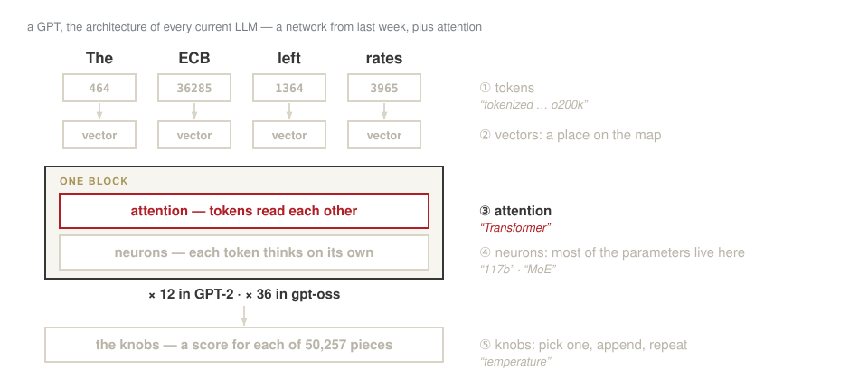
Every vector looks at the others and moves towards the ones that matter to it. The one new idea since last week.
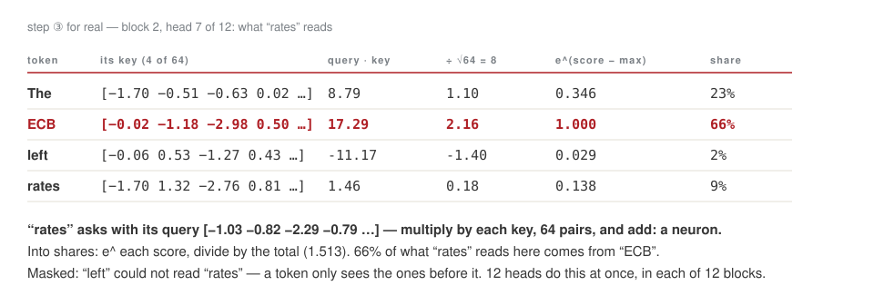
The clip’s three steps, with GPT-2’s own numbers: a score for each earlier token, shares of 100%, add the mix to the vector.
Bet
“The bank raised rates because it …” — “it” has no meaning of its own. Which neighbour will it move towards, and with what share?
The same three steps: bank 70%, rates 16%. The numbers by hand: session.ipynb § 2.
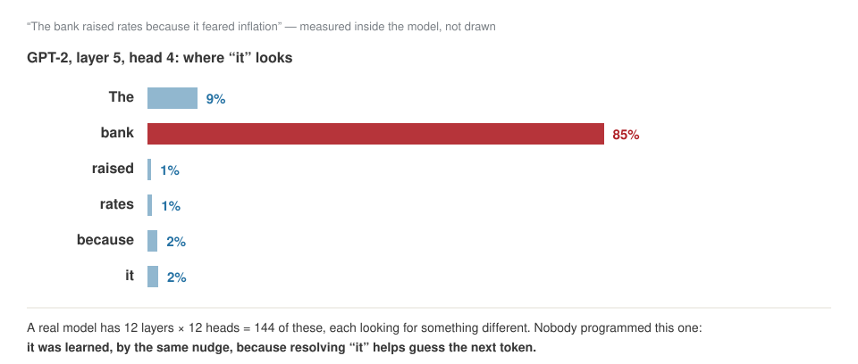
Vaswani et al., Attention Is All You Need, 2017 — the paper behind every model since.
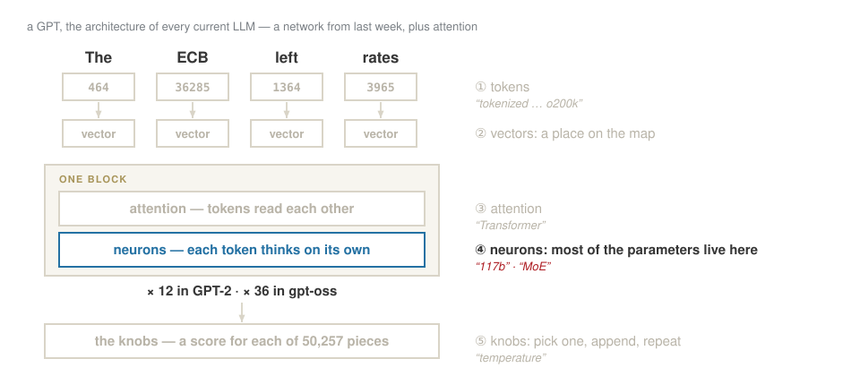
After attention, each token goes through an ordinary network — last week’s, on its own. Most of the 117 billion numbers live here.
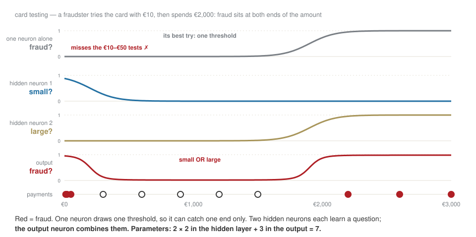
In an LLM the neurons invent questions too — about grammar, meaning, facts.
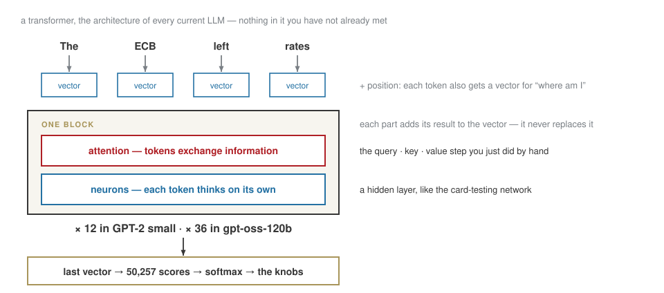
Attention moves information between tokens; the neurons transform it, token by token — and hold much of what the model knows. Stack the block 36 times: that is a Transformer.
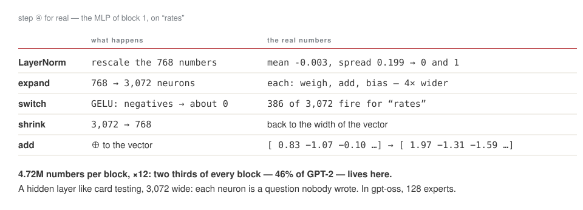
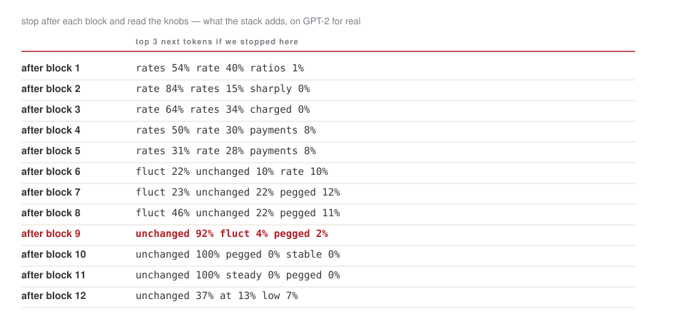
Block by block the guess sharpens: “rate”, then “fluct” (the start of fluctuate), then “unchanged” at 92% after block 9. The last blocks spread it back to 37%.
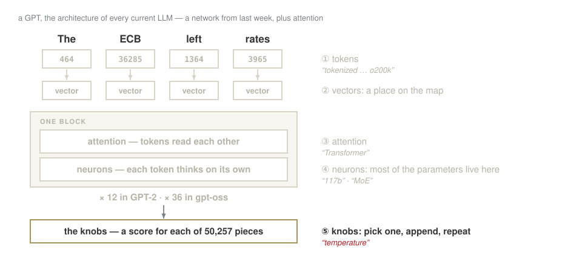
The last token’s vector becomes a score for every possible next piece. Pick one, append it, run the whole stack again.
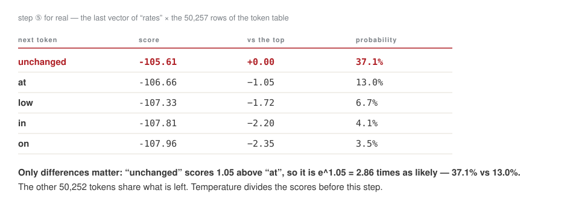
Temperature divides every score before the softmax. On GPT-2’s real knobs, after “The ECB left rates”:
| next token | T = 0.5 | T = 1 | T = 2 |
|---|---|---|---|
| unchanged | 83.9% | 37.1% | 2.4% |
| at | 10.2% | 13.0% | 1.4% |
| low | 2.7% | 6.7% | 1.0% |
| in | 1.0% | 4.1% | 0.8% |
| on | 0.8% | 3.5% | 0.7% |
At T = 2 the 50,257 tokens are spread so flat that “unchanged” drops to 2%. T = 0 always picks the top token. APIs add one more dial, top-p: draw only among the top tokens that together make p (say 90%) — the long tail is cut off.
T = 0 (always the top knob): The ECB left rates unchanged at 0.5 percent in June, but the ECB
T = 1, three runs:
Each word is picked, appended, and the whole machine runs again. Nothing is looked up: “0.5 percent in June” is a number that fits, not a fact.
LAB · session.ipynb § 2–4
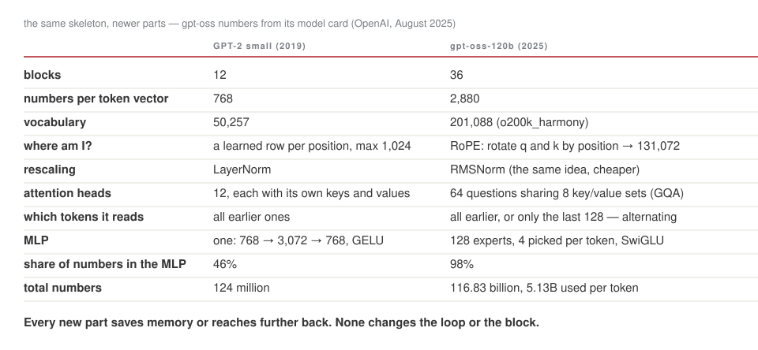
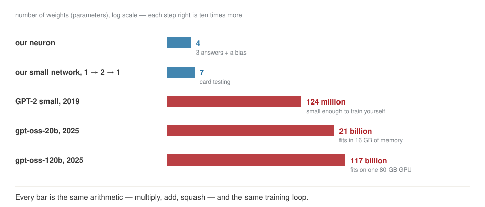
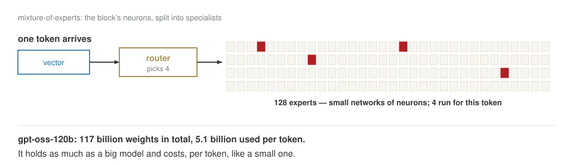
| each of 117 billion weights stored in | memory needed |
|---|---|
| 16 bits (2 bytes) | ≈ 234 GB — several GPUs |
| ~4 bits (MXFP4) | ≈ 62 GB — one 80 GB GPU |
Quantization: store each number with less precision. How, and what it costs — for real, on GPT-2.
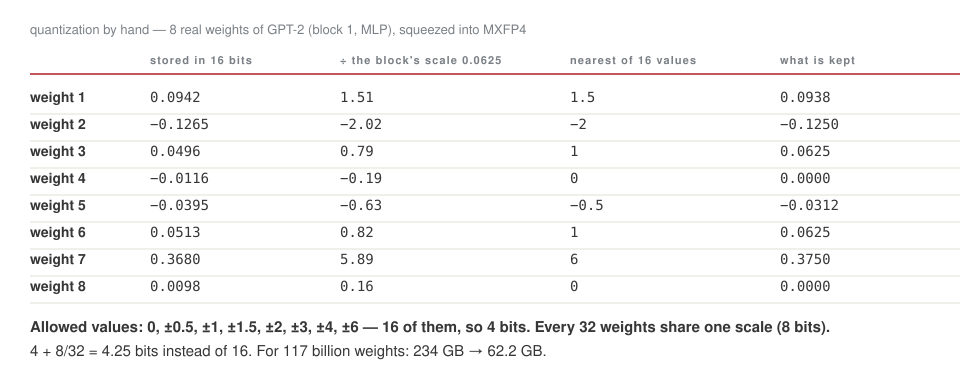
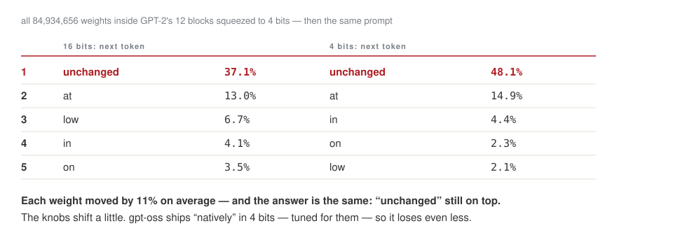
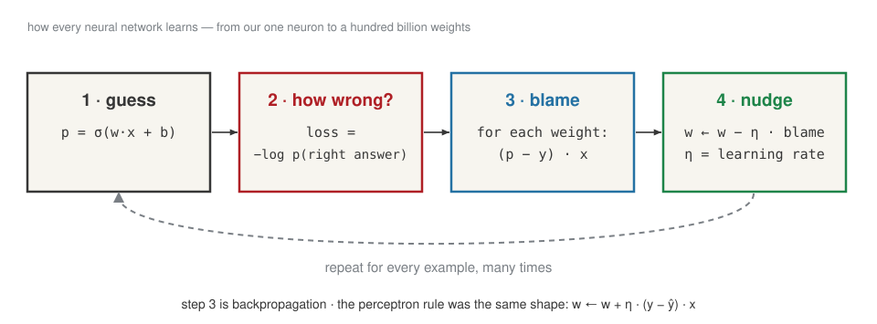
Add payment I — a customer on holiday: large, abroad, genuine — and no rule is perfect. Too small a step crawls; too large jumps over the best answer.
Five sentences in the training text, all ending “… left rates”, then:
| next word | times in the text | share | the knob, after 40 passes |
|---|---|---|---|
| unchanged | 3 of 5 | 60% | 61% |
| at | 1 of 5 | 20% | 21% |
| steady | 1 of 5 | 20% | 17% |
| higher, lower | never | 0% | 1% |
Nobody set the knobs: the loop nudged them until they matched how often each word follows this context. On trillions of tokens, that is pre-training.
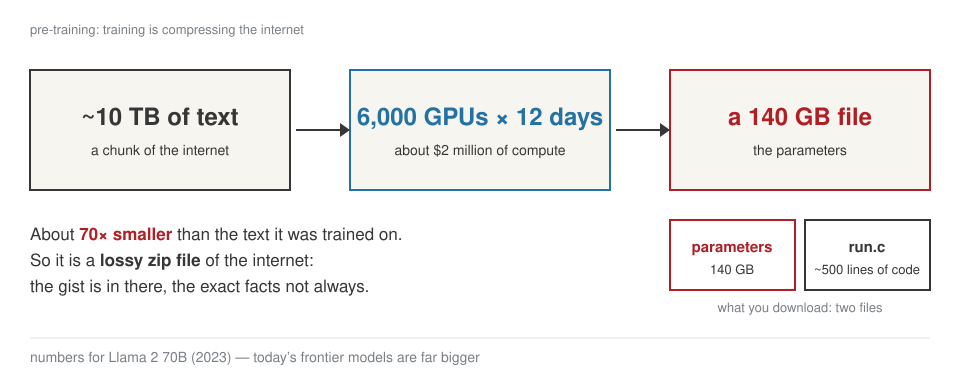
The loop: take a piece of text, hide the next token, guess, nudge every weight. Repeat.
The data: “a text-only dataset with trillions of tokens, with a focus on STEM, coding, and general knowledge. Knowledge cutoff: June 2024.”
The bill: 2.1 million H100-hours — about a thousand top GPUs for three months.
Bet
What comes out is a base model. Ask it “Should I buy Bitcoin today?” What does it write?
Quotes and numbers: the gpt-oss model card, OpenAI, August 2025.
Try it yourself, both models: session.ipynb § 4.
People write tens of thousands of example conversations:
User: Summarise this contract in three points. Assistant: 1. … 2. … 3. …
The same loop again — now the “next token” to guess is the ideal assistant’s reply.
What it learns: the format, the tone, when to refuse. A persona.
What it does not learn: new facts. The knowledge is still the compressed internet from stage 1.
When you talk to an assistant, you talk to a statistical imitation of the people who wrote those examples.
Problems with a checkable answer — maths, code, logic. The model tries each one many times; the attempts that reach the right answer are nudged up.
Nobody writes the steps. The model discovers that writing its reasoning out first gets more answers right.
Where no answer can be checked — tone, helpfulness — a second model, trained on human preferences (“A or B?”), gives the score.
“A high-compute RL stage” = they spent heavily here. That is what “reasoning model” means.
For you: the “thinking” is tokens. You wait for them, and you pay for them.
| stage | the “right answer” in the loop | what comes out |
|---|---|---|
| pre-training | the next token of internet text | a base model: it continues documents |
| supervised fine-tuning | the next token of good example conversations | an assistant |
| reinforcement learning | whatever earns a higher reward score | an assistant that works problems through — “reasoning” |
The formula never changes: w \leftarrow w - \eta \cdot blame. Only what counts as right does.
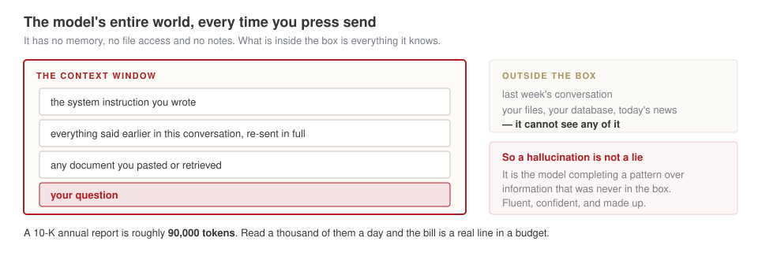
Every token attends to every other: twice the context, four times the attention work. That is why long prompts cost more than they look.
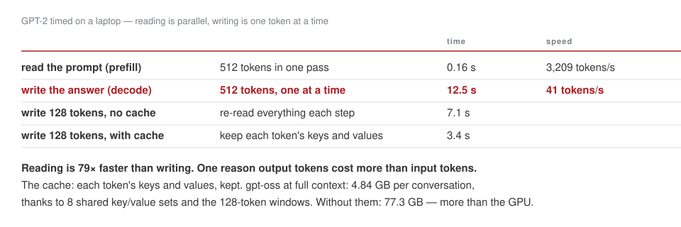
| a closed model, through an API | an open-weight model (gpt-oss) | |
|---|---|---|
| you get | an answer per call | the 117 billion numbers themselves |
| you pay | per token, forever | the hardware to run it |
| your data | goes to the vendor | stays on your machine |
| it changes | when the vendor decides | never, unless you change it |
Apache 2.0: you may use it commercially, modify it, sell what you build. Open weights is not open source: the training data and code stay private.
| what you see | why, from what we built |
|---|---|
| a confident, invented number | there is always a top knob — even when the fact was never in the data |
| no knowledge after a date | the weights are frozen at the end of training |
| knows A → B, not B → A | it learned to continue text in one direction |
| bad at spelling and arithmetic | it sees tokens, not letters or digits |
Every one of these is why, from week 4, we give it documents to read and tools to call.
LAB · session.ipynb § 5
Ask your assistant about a real company. Split every sentence:
Verifiable — a number, a date, a name, a source you can open
Plausible — fluent, confident, and nothing to check it against
Then check two from the left pile against the company’s own report.
“Each model is a Transformer which leverages mixture-of-experts to reduce the number of active parameters needed to process input. gpt-oss-120b activates 5.1B parameters per token … The models have 117b and 21b total parameters …
We tokenized the data using … o200k_harmony … The models were post-trained … including a supervised fine-tuning stage and a high-compute RL stage. … The weights … are freely available … and come natively quantized in MXFP4. This allows for the gpt-oss-120B model to run within 80GB of memory … Available under the flexible Apache 2.0 license.”
Spec table: context length 128k.
Circle again. Which words are still dark?
Homework 2, due Tue 6 Oct, in your Drive folder week-02/:
Before you leave: three lines at the bottom of the notebook, in your words.
Next week: real fraud data, from the raw file to a model — and whether the model is any good.
AI for Business & FinTech · ESE Florence